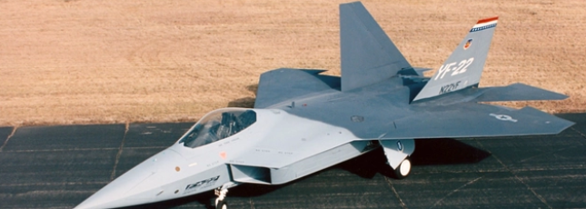
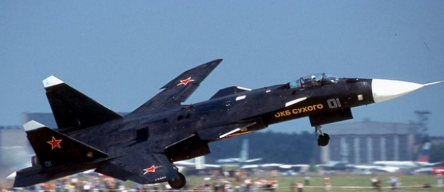
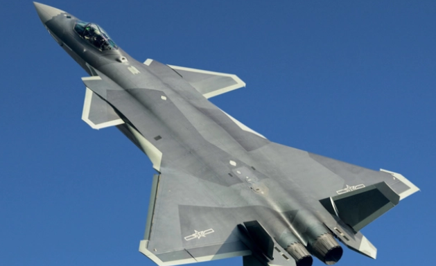
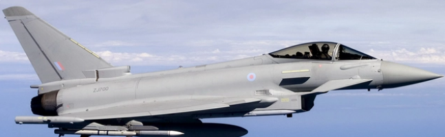

|
|
|
|
盘点一些世界著名的战斗机
F-22战斗机（英文名：F-22 Fighter）

通称：洛克希德·马丁F-22“猛禽”，通用名称：猛禽，第五代战斗机，当今世界综合性能最佳的战斗机。隐身性能、灵敏性、精确度非常好。由美国洛克希德·马丁公司（Lockheed
Martin）和波音公司联合研制。
苏-57战斗机（设计代号：I-21/T-50）

隐身重型战斗机。是俄罗斯第五代战斗机，但是西方国家称为第四代战斗机。前身为T-50战斗机，由苏霍伊设计局并有俄罗斯联合航空制造公司研发。
歼-20（英文：Chengdu J-20）

通称威龙，是中航工业成都飞机设计研究所研制，具备高隐身性、高态势感知、高机动性等能力的隐形第五代制空战斗机，按欧美旧标准为第四代，俄罗斯新标准为第五代。
台风战斗机 （英文：Eurofighter Typhoon）

通称：欧洲台风，由欧洲战斗机公司（英、德、意和西班牙4国合作）设计研发。多用途第四代半战斗机。与法国达索阵风战斗机，瑞典萨博JAS-39战斗机，并称为欧洲“三雄”。
|
|
| |